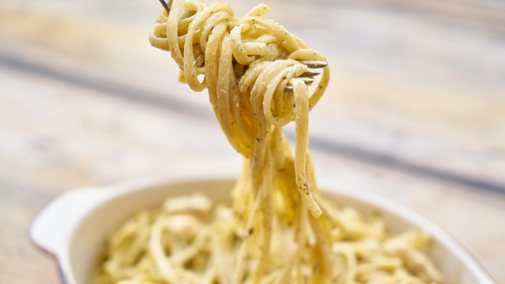

Go back
Carbonara

Image by
Engina Kyurt
Spaghetti Carbonara is a classic Italian pasta dish made with spaghetti,
pancetta, egg yolks, and grated Pecorino Romano cheese, all combined to
create a creamy and flavorful sauce.
Ingredients
- 1 pound spaghetti
- 4 ounces pancetta or bacon, diced
- 2 cloves garlic, minced
- 4 large egg yolks
- 1 cup grated Parmesan cheese
- 1/2 cup grated Pecorino Romano cheese
- 1/2 teaspoon freshly ground black pepper
Instructions
-
Cook the spaghetti in a large pot of boiling salted water until al
dente, according to the package instructions. Reserve 1 cup of the pasta
cooking water, then drain the spaghetti and return it to the pot.
-
While the pasta cooks, heat a large skillet over medium heat. Add the
diced pancetta or bacon and cook until crispy, about 6-8 minutes. Remove
the pancetta/bacon from the skillet with a slotted spoon and transfer to
a plate lined with paper towels to drain.
-
Add the minced garlic to the skillet with the rendered pancetta/bacon
fat and cook for 1-2 minutes or until fragrant. Remove the skillet from
the heat and set aside.
-
In a medium bowl, whisk together the egg yolks, Parmesan cheese,
Pecorino Romano cheese, and black pepper until well combined.
-
Add the reserved pasta cooking water to the skillet with the garlic and
pancetta/bacon fat and stir to combine.
-
Add the spaghetti to the skillet and toss to coat with the garlic and
pancetta/bacon fat.
-
Remove the skillet from the heat and quickly stir in the egg yolk
mixture until the spaghetti is well coated.
-
Divide the spaghetti among serving plates and sprinkle with the crispy
pancetta/bacon.
- Serve hot and enjoy!
Go back